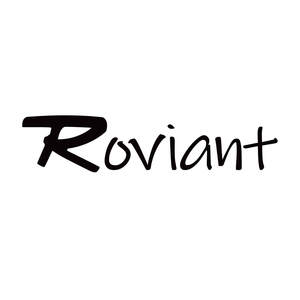

Trade Mark Journal No.2025/050 12 December 2025
UK00004303132 1 December 2025 (7)

- Class 7
- Barking machines; Ramie barking machines; Sawing machines; Lapping machines; Vibrating machines; Hammering machines; Spraying machines; Punching machines; Thrashing machines; Grinding machines; Bearings [parts of machines]; Bearings, as parts of machines; Shaft bearings [parts of machines]; Mounted bearings [parts of machines]; Bushings being parts of machines; Bushings for use as parts of machines; Bushings [parts of machines]; Bearings and bushings [machine parts]; Pulleys incorporating bearings [parts of machines]; Bearings for machines; Blades for power tools; Saw blades for use with power tools; Power tools; Grinders being power tools; Blades for power saws; Burrs [power tools]; Blades for powered tools; Countersinks [power tools]; Collets for power tools; Reamers [power tools]; Discs for cutting for use with power tools; Drills [power tools]; Hydraulic power tools; Electric power tools; Extensions for power tools; Tile saws [power tools]; Discs for abrading for use with power tools; Rescue saws [power tools]; Power operated tools for cutting; Power operated cutting tools; Brushes [parts of machines]; Brushes being parts of machines; Electric brushes being parts of machines; Electrical brushes being parts of machines; Wire brushes [parts of machines]; Combs being parts of machines; Blades [parts of machines]; Brushes being parts of motors; Tools [parts of machines]; Knives being parts of machines; Electronic door closing system; Electronic door openers; Automatic door apparatus [electric]; Opening and closing mechanisms; Window opening devices (Electric -); Door closers, electric; Pneumatic door closers; Door closers, pneumatic; Hydraulic door closers; Door closers, hydraulic; Pneumatic door openers and closers [parts of machines]; Door openers and closers (Pneumatic -) [parts of machines]; Pneumatic door openers; Door openers, pneumatic; Door openers, electric; Electric door openers; Hydraulic door openers and closers [parts of machines]; Door openers and closers (Hydraulic -) [parts of machines]; Hydraulic door openers; Door openers, hydraulic; Garbage disposals; Garbage [waste] disposals; Disposals (Garbage [waste] -); Food waste disposals [garbage disposals]; Waste disposals; Garbage disposers; Garbage compactors; Garbage disposal units; Garbage disposal machines; Trash compactors; Balers for industrial use; Balers for agricultural use; Shredders [machines] for industrial use; Slitting machines for industrial use; Robots for industrial use; Vibrators [machines] for industrial use; Mincers [electric] for industrial use; Machines for agricultural use; Collating machines for industrial use; Manipulators [machines] for industrial use; Belts for engines; Belts for motors and engines; Fan belts for motors and engines; Belts (Timing -) for vehicle engines; Fan belts for vehicle engines; Timing belt pulleys [parts of engines]; Fan belts for land vehicle engines; Timing belt tensioners for land vehicle engines; Cylinders for motors and engines; Mufflers for motors and engines.
Zhengzhou Ge 'ao E-commerce Co., Ltd.
Representative: DY CNUK Ltd